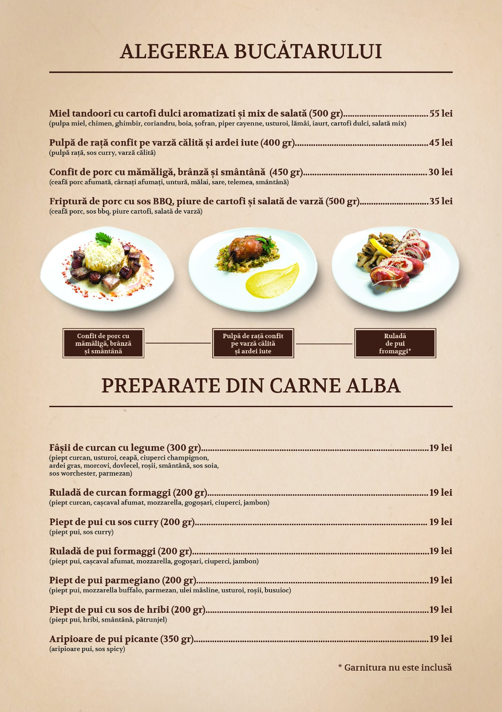

ART STATEMENT DISHES
Menu By Mohammed Aqeed
Chef Mohammed Aqeed has dedicated the last 40 years into exploring the high cuisine. With his vision and passion he has been creating a culinary legacy in Romania, for the past 22 years.
A legacy that can be experienced in our new menu, which gathers deep knowledge from gastronomy, chemistry and architecture.
The entire menu, showing
cutting edge platings, was created as a tribute to the contemporary fine dining. Using only high quality ingredients and surprising fusions, all our dishes
are an art statement.
